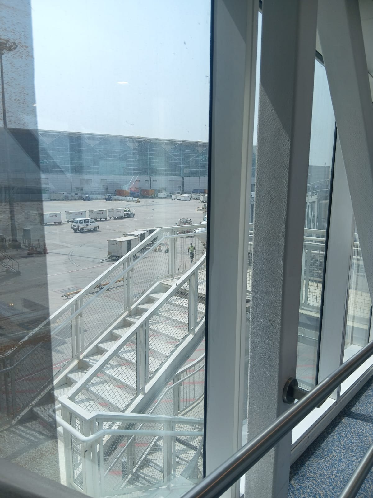
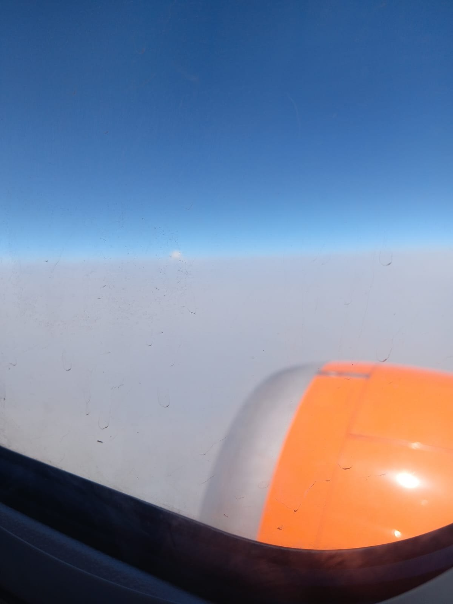
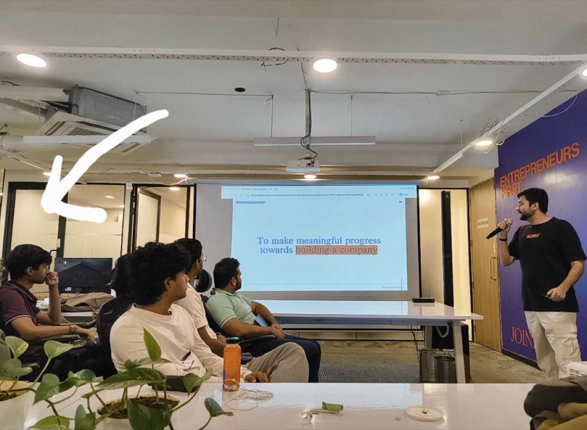
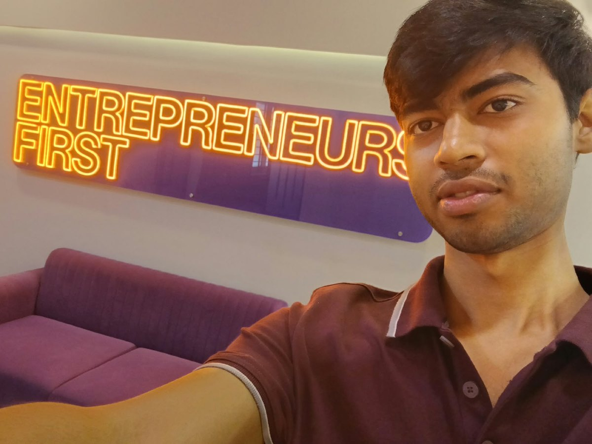

Divyansh Chauhan
19, on a gap year, from bhagwanpur, a small town in uttarakhand. i build products and sell them.
right now i'm building datak. it supplies cad and engineering simulation data to ai labs training models on physical design, and i'm building a benchmark to test whether those models understand a part. before this i founded blip ai and took it past $200k in gross sales, until a three-day attack led to refunds on about a third of it. at 18 i was the first hire at slashy (yc s25).
the cad benchmark what happened at blip early life
Right now i'm
- building datak (datak.si). i source and sell cad and engineering simulation datasets to labs training ai on mechanical design: step, iges, parasolid, stl, solidworks, catia and creo geometry, plus ansys, abaqus and openfoam runs with their solver settings and result fields. i run it end to end: design briefs and data specs, a network of cad design partners, qa on geometry, labels and originality, and the manifests and secure delivery a buyer needs before paying for data they can't check by eye.
- building a benchmark for cad data on top of it, using a dataset i'm making myself. right now each lab tests its mechanical-design models on whatever data it has, so results can't be compared. the benchmark asks every model the same question: does it reason about the part, or match on its shape? targeting launch before next year. how it's measured →
- next, training my own model on that data and raising money on the result. if i sell the data and run the benchmark, i'm in a good position to train a model that does well on it. none of this part is built yet. where it's going →
- founder's office @ slashy (yc s25). first hire, joined at 18, work directly with the founder. built reporting dashboards on live product and campaign data (~50% faster turnaround), and an in-house lead sourcing and enrichment pipeline in python and c++ across several rest apis, which replaced clay and apollo and cut cac. most of the work was handling rate limits, partial matches, duplicates and apis that return 200 when they fail, so i added retry and dedupe logic before the team relied on it. i also own release quality: 100+ issues triaged and closed with engineering.
Where this is going
the long-term goal is an agent that works like a mechanical engineer. you describe the part you need and the loads it has to carry. the agent designs it in cad, runs the simulations an engineer would run (stress, deflection, heat, fatigue), changes the design when it fails, and only hands it over once the numbers pass. what you get is a file you can manufacture, plus the test results that show it works.
robots are the first obvious user. a robot that needs a new bracket, gripper finger or mount could get one designed and checked without waiting for an engineer. that's a step towards robots designing and building parts for other robots.
the use case i think about most is space. on a space station, or later on the moon or mars, a crew can't wait months for a replacement part from earth. with a 3d printer or machine on board and an agent like this, they could describe the broken part, get a design already simulated against the loads it will face, and make it on the spot.
none of this exists yet. datak's data and the benchmark are the first two steps, because you can't train a model like this, or trust it, without good data and a fair way to test it.
Previously i
- founded blip ai and ran it alone: voice-to-text, a cheaper alternative to wispr flow. i handled product, pricing, onboarding and distribution, and reached $206,947 in gross sales and 10,000+ users from ~2m organic views, with no ad spend and no existing audience. then an attack took us down for three days, and 307 refunds brought it to about $128k net. the whole story →
- ran india gtm @ magic hour ai (yc w24), jul 2025 – may 2026. sized the market, chose channels and ran them. set up the content and outreach workflows in n8n so they ran on a schedule. 1,000+ outreach touchpoints, 20+ user interviews, 50+ active threads at once, 200k+ views on linkedin and reddit, and the company's first paying revenue from india. most of my starting assumptions turned out to be wrong.
- founded aishield at 17: ai content protection for creators. i set product direction, ran customer discovery, and led two engineers (one ex-amazon, one from a yc-backed startup) through build and launch. onboarded 4+ creators and an agency of 30+, ~10m followers combined. both engineers were older and more experienced than me, so i focused on defining the customer problem clearly and let them decide how to build it.
- built an inbox agent with n8n, the gmail api, an llm and airtable, over oauth and webhooks. it watches an inbox, classifies threads, drafts follow-ups and keeps a tracker updated. a simple version sends duplicates or replies when it shouldn't, so most of the work was retry logic, dedupe keys, and rules for what it can't send without my approval.
- did growth and product work with 4+ yc-backed startups, including channel3 and revisiondojo. selected for the young asian programme to pitch at the national university of singapore. reached round 2 of the all india dps capstone hackathon.
- grew a youtube channel from 0 to 2k subs and collaborated with animation youtubers with millions of subscribers (lil yash, not your type). that's where i learned that an audience has to be built deliberately.
My first flight
by then i'd been shipping things from my room for a couple of years, but i had never left the state for work.
then entrepreneurs first invited me to their bengaluru office and paid for the flight. i was 18, and i spent the whole descent looking out of the window.


after landing, i worked out quickly that i was the youngest person in the room by several years. everyone else had a company, a co-founder, or a career they'd left to be there. i had a laptop and a list of things i'd shipped. the slide said "to make meaningful progress towards building a company."

i expected to feel like a fraud. instead i could see that the people there had simply done this more times than i had. they had more reps. so i went home and kept doing it.

More
What i've learned
- plan distribution while you build the product. the blip features that sold were the ones i could explain in a one-line reddit post.
- run a cheap version of the experiment yourself instead of reading about someone else's. a lot of growth advice is one founder's experience written up as a rule.
- if you'll do something twice, automate it. a scheduled workflow is more reliable than relying on motivation.
- the unglamorous parts matter most. retry logic, dedupe keys, rate limits and clear limits on what a system can do are what let you leave it running. i learned this building pipelines, and again when blip went down.
- being the youngest in the room mattered less than i expected. people cared whether the numbers in the dashboard were right.
- ask for help early and in public, though the answer usually comes from someone you already know. i waited a full day before posting about the blip outage, and that delay cost more than the embarrassment would have. the fix came from a colleague who lent me his api account, not from the 3,372 people who saw the post.